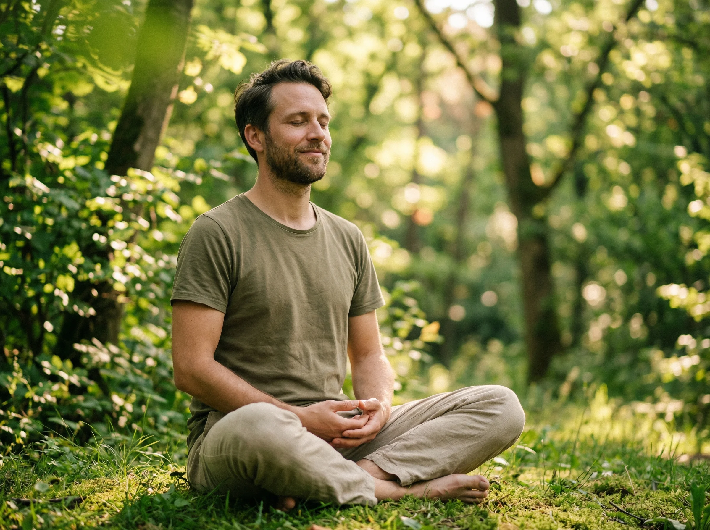

El éxito llegó, pero el vacío también
Has trabajado duro, tienes familia, quizás fe… pero de vez en cuando te preguntas: "¿Es esto todo?" Esa pregunta no es debilidad. Es tu alma despertando.
Millones de personas en Latinoamérica sienten exactamente lo mismo. Crecieron con una religión que no termina de conectar, o simplemente buscan algo más profundo que rituales vacíos.
Te sientes desconectado, aunque tengas todo
Buscas propósito y respuestas que nadie te da
La religión heredada ya no te llena
Quieres sanar pero no sabes por dónde empezar
Ellos también dudaron — hasta que encontraron el Santuario
Fui ateo durante 8 años. No por rebeldía, sino porque no encontraba respuestas reales. En el Santuario aprendí que la espiritualidad no necesita de edificios ni de miedo. Hoy vivo con una claridad que nunca imaginé posible.

Crecí en una familia muy religiosa. Tenía culpa hasta de dudar. El Santuario me enseñó a desaprender para reconectar de verdad. Hoy soy la versión más auténtica de mí misma.
Siempre sentí que la iglesia no respondía mis preguntas. Cuando encontré el Santuario, descubrí que la espiritualidad puede ser personal, libre y profundamente transformadora. Los retos mensuales cambiaron mi rutina por completo.
Tu alma ya sabe que es el momento. Da el primer paso.
Unirme al Santuario — Es GratisAcceso gratuito · Sin tarjeta de crédito
El Santuario de Bienestar
Una comunidad privada en Skool para personas de habla hispana que buscan reconectar con su esencia: alma, energía y consciencia — sin dogmas, sin juicios.
Fundado con la misión de crear el espacio espiritual en español que no existía, el Santuario combina sabiduría ancestral — Chakras, Arcángeles, Maestros Ascendidos y Rayos de Luz — con prácticas modernas de meditación, manifestación y trabajo energético. Nuestro Método Tríptico, "El Arte de Ver a Dios", guía a cada miembro a través de tres pilares: Experiencia, Energía y Ejecución, para lograr una transformación real y medible en su vida diaria.
Experiencia
Contenido único diseñado para la comunidad hispana: Chakras, Arcángeles, Maestros Ascendidos y Rayos de Luz.
Energía
Un ambiente vibrante y seguro donde cada miembro eleva al otro. Meditaciones, yoga y prácticas de manifestación.
Ejecución
Retos mensuales con resultados reales: Manifestación, Hábitos, Gratitud e Introspección profunda.
Classroom con contenido exclusivo
Módulos educativos sobre espiritualidad, energía y consciencia diseñados para hispanohablantes.
Comunidad activa 24/7
Conecta con cientos de personas en tu mismo camino. Comparte, aprende y crece juntos.
Llamadas en vivo mensuales
Acceso al calendario de eventos para sesiones grupales de meditación, Q&A y workshops en vivo.
Retos transformadores
Manifestación, Hábitos Sagrados, Gratitud e Introspección — retos diseñados para construir tu nueva versión.
Gamificación y premios
Sistema de niveles donde desbloqueas contenido especial. Los más activos ganan libros exclusivos y llamadas 1 a 1.
Herramientas del Método Tríptico
Aprende "El Arte de Ver a Dios" — un sistema único para conectar con lo divino desde tu propia experiencia.
Recibe una meditación guiada gratis
Una meditación de 10 minutos para reconectar con tu energía interior. Sin compromiso.
Quiero mi meditación gratisEste espacio es para ti si…
Tienes entre 25 y 45 años y sientes que hay más para ti en la vida
Buscas propósito, sanación y una conexión espiritual auténtica
Las religiones convencionales no responden tus preguntas más profundas
Quieres crecer junto a una comunidad que te entiende y te eleva
Estás listo para convertirte en la mejor versión de ti mismo
Resolvemos tus dudas
¿Qué es el Santuario de Bienestar?
El Santuario de Bienestar es una comunidad privada en español alojada en la plataforma Skool, diseñada para personas de habla hispana entre 25 y 45 años que buscan reconectar con su esencia espiritual. A diferencia de grupos religiosos tradicionales, el Santuario ofrece un espacio libre de dogmas donde exploramos temas como Chakras, Arcángeles, Maestros Ascendidos y Rayos de Luz desde una perspectiva práctica y respetuosa. Incluye contenido educativo exclusivo, meditaciones guiadas, retos mensuales de transformación y una comunidad activa que se apoya mutuamente en su camino de despertar espiritual.
¿Es una religión o secta?
No. El Santuario de Bienestar no es una religión, secta ni organización dogmática. Es una comunidad educativa y de apoyo donde cada miembro explora la espiritualidad desde su propia experiencia. No hay líderes supremos, no pedimos diezmos, no hay obligaciones de asistencia. Respetamos todas las creencias y caminos. Nuestro enfoque es brindar herramientas prácticas — meditación, trabajo energético, introspección — para que cada persona encuentre su propia conexión con lo divino.
¿Realmente es gratis?
Sí. Como miembro fundador, accedes a toda la comunidad sin costo. No necesitas tarjeta de crédito ni hay pagos ocultos. El acceso gratuito incluye el classroom con contenido educativo, los retos mensuales, las llamadas en vivo y la participación completa en la comunidad. Esta oferta es exclusiva para miembros fundadores y las plazas son limitadas.
¿Qué es Skool y cómo funciona?
Skool es una plataforma de comunidades en línea que combina lo mejor de un foro, un aula virtual y un sistema de gamificación. Al unirte al Santuario en Skool, tendrás acceso a un feed de comunidad donde compartir con otros miembros, un classroom con módulos educativos organizados, un calendario de eventos en vivo, y un sistema de niveles donde desbloqueas contenido especial al participar activamente.
¿Qué es el Método Tríptico?
El Método Tríptico es nuestro sistema exclusivo llamado "El Arte de Ver a Dios". Es un marco de tres pilares — Experiencia, Energía y Ejecución — diseñado para guiarte en un proceso de reconexión espiritual profunda. A través de la Experiencia accedes a conocimiento ancestral adaptado al mundo moderno; con la Energía trabajas prácticas de meditación, yoga y sanación; y con la Ejecución aplicas todo mediante retos concretos que transforman tu vida diaria.
¿Necesito experiencia previa en espiritualidad?
No necesitas ninguna experiencia previa. El Santuario está diseñado tanto para personas que nunca han explorado la espiritualidad como para quienes ya tienen un camino recorrido. El contenido está organizado desde lo básico hasta lo avanzado, y la comunidad es un espacio seguro donde todas las preguntas son bienvenidas sin importar tu nivel.
Artículos para tu Camino

5 Señales de que tu Alma Está Lista para Despertar
Descubre las señales sutiles que indican que estás listo para un despertar espiritual profundo y transformador.
Leer más →
Chakras: La Guía Completa para Principiantes
Todo lo que necesitas saber sobre los 7 chakras principales y cómo equilibrarlos para una vida más plena.
Leer más →
Cómo la Meditación Transformó la Vida de Nuestros Miembros
Historias reales de transformación a través de la práctica diaria de meditación dentro del Santuario.
Leer más →Tu transformación comienza hoy
Accede gratis al Santuario de Bienestar y únete a una comunidad que te espera.
Tu alma ya sabe que es el momento.
Sin compromisos · Sin tarjeta de crédito · Acceso inmediato